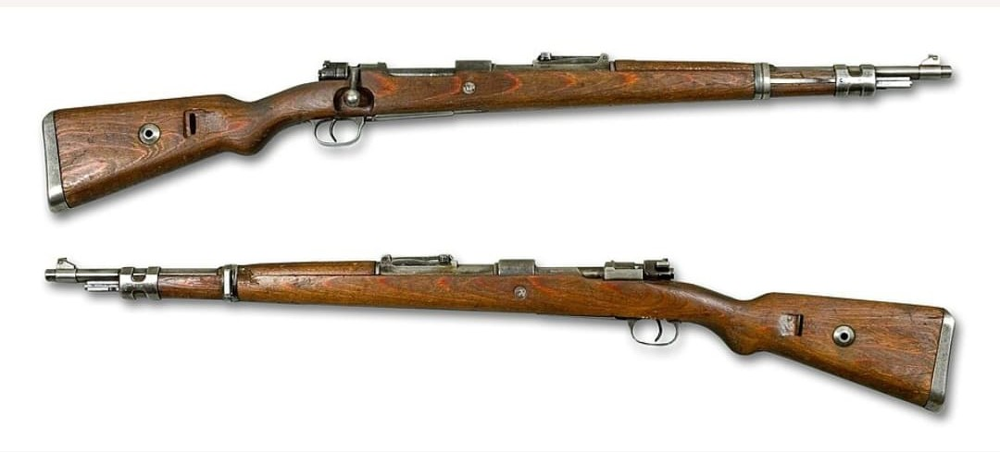
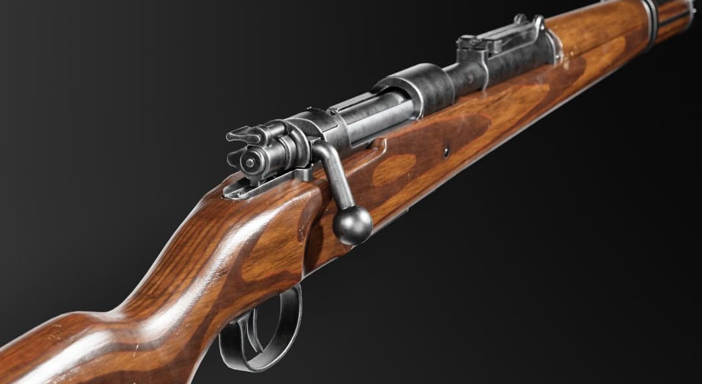
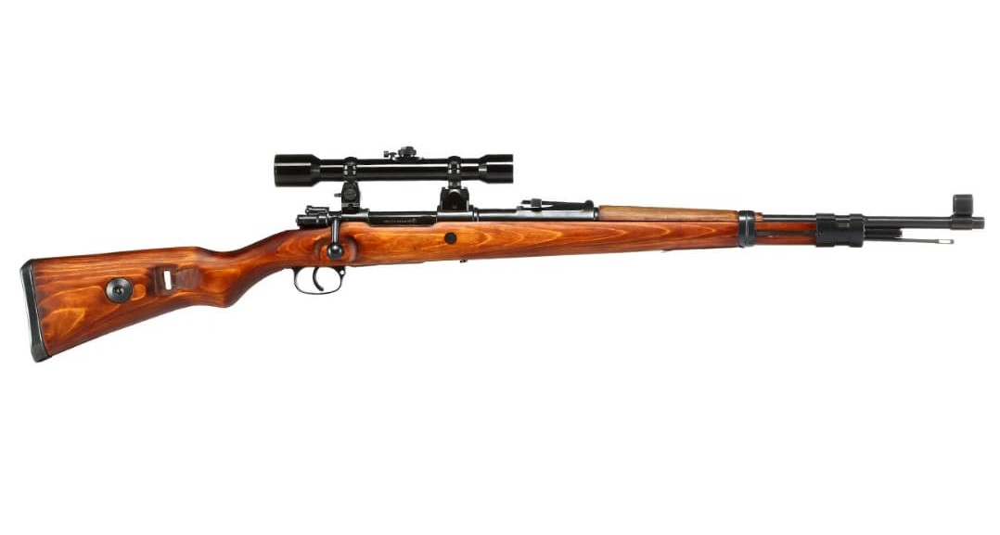
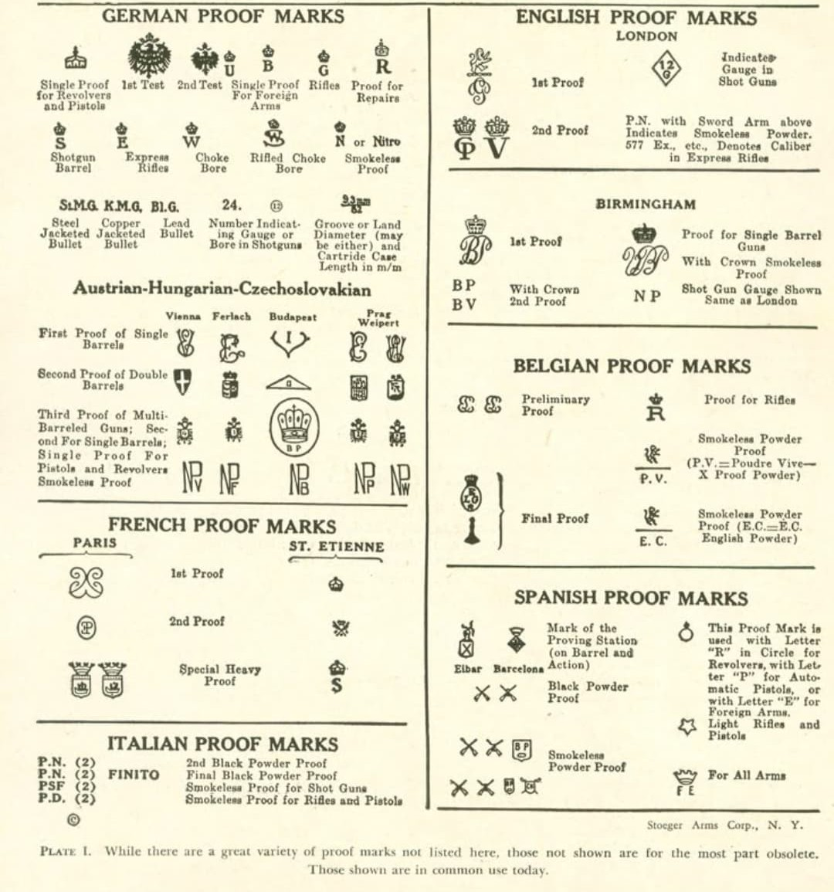

Le Karabiner 98k (K98k) est le fusil réglementaire de l’infanterie allemande durant la Seconde Guerre mondiale. Chambré en 7,92×57 mm Mauser, il est réputé pour sa robustesse, sa précision et sa fiabilité sur tous les fronts.
Héritier du Gewehr 98, il devient l’arme principale de millions de soldats allemands.
Le K98k est un fusil à verrou à répétition manuelle, doté d’un magasin interne de 5 cartouches. Sa conception simple et solide permet une utilisation dans les conditions les plus extrêmes : froid, boue, sable, humidité.
Sa crosse en bois, son canon court et ses organes de visée réglables en font une arme polyvalente pour l’infanterie.
Le Karabiner 98k appartient à la grande famille des fusils Mauser. Le terme “Mauser” désigne à la fois une entreprise allemande, un système de verrou extrêmement fiable, et une lignée de fusils militaires utilisés depuis la fin du XIXe siècle.
Le K98k est l’évolution finale du Gewehr 98, le fusil long adopté en 1898. Il reprend le célèbre verrou Mauser, considéré comme l’un des meilleurs systèmes de culasse jamais conçus, et la cartouche 7,92×57 mm Mauser.
Ainsi, même si son nom officiel est Karabiner 98k, les soldats allemands l’appellent souvent simplement “Mauser”, car il en partage la mécanique, la cartouche et la philosophie de conception.
En résumé : le Karabiner 98k est un Mauser, mais tous les Mauser ne sont pas des Karabiner 98k. Le K98k est le modèle standard de la Wehrmacht durant la Seconde Guerre mondiale.


Le K98k est utilisé comme arme principale de l’infanterie. Il est complété par les mitrailleuses MG34/MG42 et les pistolets-mitrailleurs MP40 au sein des groupes de combat.
Des versions équipées de lunettes de visée sont attribuées aux tireurs d’élite.

Les K98k portent des codes de fabricants (byf, dot, bnz, etc.), des poinçons et des dates de production. Ces marquages permettent d’identifier l’usine, l’année et parfois le lot de fabrication.
